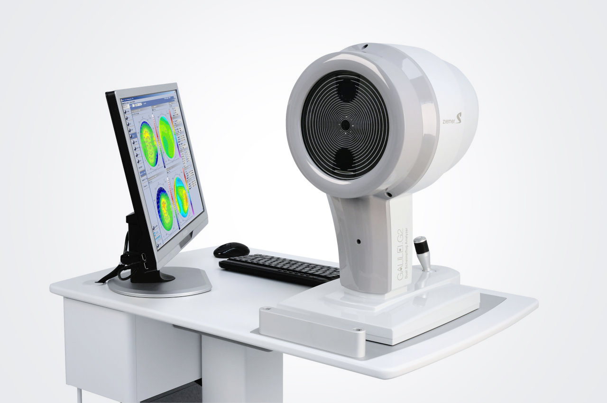

العدسات الصلبة وعلاج القرنية المخروطية
رحلة الرؤية الواضحة:
كل ما تريد معرفته عن العدسات الصلبة
وعلاج القرنية المخروطية
دليل مبسّط لأنواع العدسات الصلبة — التقليدية (RGP) والهجينة، والصلبة الكبيرة (Scleral) — ومتى يحتاجها مريض القرنية المخروطية فعلًا، ولماذا لا توجد عدسة واحدة تناسب الجميع.
تواصل مباشر عبر واتساب · رد سريع · تقييم دقيق قبل تحديد نوع العدسة
خرائط قرنية بجهاز Pentacam
تصميم وتركيب العدسات الصلبة والكبيرة
خبير دولي في القرنية المخروطية
رحلة الرؤية الواضحة
العدسات الصلبة وعلاج القرنية المخروطية

تخيل أنك تنظر إلى العالم من خلال زجاج غير مستوٍ... الألوان موجودة، الأضواء موجودة، لكن كل شيء يبدو مشوشًا قليلًا، مهما ضبطت نظارتك أو غيّرت عدساتك اللينة. هذا بالضبط ما يعيشه كثير من مرضى القرنية المخروطية يوميًا.
الخبر الجيد؟ هناك حل موجود منذ سنوات، وتطور كثيرًا، لدرجة أن كثيرًا من المرضى يندهشون حين يجربونه لأول مرة: العدسات الصلبة.
في هذا المقال، سنأخذك في جولة سهلة ومبسطة لفهم أنواع هذه العدسات، ومتى يحتاجها المريض فعلًا، ولماذا لا توجد "عدسة سحرية" واحدة تناسب الجميع.
أولًا... لماذا لا تكفي النظارة أو العدسة اللينة العادية؟
في القرنية الطبيعية، يكون السطح الأمامي للعين منتظمًا نسبيًا، مثل سطح كرة ناعمة. لكن في حالات مثل القرنية المخروطية، يصبح هذا السطح غير منتظم، فتتشوه الصورة قبل أن تصل أصلًا إلى الشبكية.
النظارة والعدسة اللينة تعتمدان على انتظام سطح القرنية لتعطيا رؤية واضحة. فإذا كان السطح نفسه غير منتظم، تصبح هاتان الأداتان محدودتَي الفائدة، مهما كانت درجتاهما دقيقة.
هنا يأتي دور فكرة مختلفة تمامًا: عدسة لا "تتبع" شكل القرنية المشوّه، بل "تصنع" أمامها سطحًا بصريًا جديدًا ومنتظمًا.
العدسات الصلبة التقليدية (RGP): البداية الكلاسيكية الفعّالة
العدسات الصلبة المنفذة للغازات (RGP) صغيرة الحجم نسبيًا، لكنها تحافظ على شكلها الثابت فوق العين، وتسمح في الوقت نفسه بمرور الأكسجين إلى القرنية بشكل طبيعي.
بفضل صلابتها، تتغلب هذه العدسات على عدم انتظام سطح القرنية وتمنح رؤية أوضح بكثير مقارنة بالنظارة، خاصة في حالات:
- القرنية المخروطية.
- الاستجماتيزم غير المنتظم.
- بعض الحالات بعد عمليات القرنية أو الليزك.
- عندما لا تتحسن الرؤية كفاية بالنظارة أو العدسات اللينة.
نقطة يجب معرفتها: بسبب حجمها الصغير نسبيًا، ترتكز هذه العدسات بشكل مباشر على القرنية، ولذلك قد لا تكون الخيار الأمثل عندما يكون عدم انتظام القرنية شديدًا جدًا.
العدسات الهجينة: الجمع بين الوضوح والراحة
فكّر فيها كحل وسط ذكي.
مركز العدسة الهجينة صلب، فيمنح جودة بصرية عالية، بينما حافتها لينة، فتضيف راحة إضافية للعين وثباتًا أفضل للعدسة.
هذا التصميم يجعلها خيارًا مناسبًا لبعض المرضى الذين يحتاجون فعلًا إلى المزايا البصرية للعدسة الصلبة، لكنهم يجدون صعوبة في التأقلم مع العدسة الصلبة التقليدية. ومع ذلك، يبقى نجاح هذا النوع مرتبطًا بشكل القرنية ودرجة الحالة، وبمدى دقة تصميم العدسة لكل مريض.
العدسات الصلبة الكبيرة (Scleral Lenses): نقلة نوعية
وهنا الجزء الأكثر إثارة للإعجاب في عالم عدسات القرنية المخروطية.
على عكس العدسات السابقة، لا ترتكز العدسات الصلبة الكبيرة على القرنية مباشرة، بل تمتد لتستقر على بياض العين (الصلبة)، تاركة فراغًا صغيرًا فوق القرنية يُملأ بمحلول معقم.
النتيجة؟ طبقة سائل ثابتة تعمل كـ"وسادة" أمام القرنية، وتشكّل في الوقت نفسه سطحًا بصريًا منتظمًا تمامًا، بعيدًا عن أي تلامس مباشر مؤلم أو مزعج مع سطح القرنية غير المنتظم.
هذا يجعلها مفيدة بشكل خاص في:
- القرنية المخروطية المتقدمة.
- حالات عدم الانتظام الشديد في سطح القرنية.
- بعض حالات ما بعد زراعة القرنية أو جراحاتها.
- المرضى الذين لم يتحملوا العدسات الصلبة الصغيرة من قبل.
- بعض حالات جفاف العين الشديد، تحت إشراف طبيب متخصص.
ولأنها لا تلامس القرنية بالطريقة التقليدية، يجد كثير من المرضى أنها مريحة بشكل ملحوظ بمجرد الوصول إلى المقاس والتصميم الصحيحين.
"العدسات الكبيرة جدًا"... هل الأكبر يعني الأفضل؟
كثير من المرضى يسمعون بمصطلحات مثل Mini-Scleral أو Full-Scleral ويظنون أن الحجم الأكبر يعني نتيجة أفضل تلقائيًا. لكن الحقيقة أدق من ذلك.
القطر المناسب يعتمد على شكل عين كل مريض تحديدًا، وليس على قاعدة ثابتة. وهنا تحديدًا تظهر أهمية استخدام أجهزة تصوير القرنية مثل Pentacam، إلى جانب خبرة الطبيب في قراءة هذه الخرائط واختيار التصميم الأنسب.
سؤال يتكرر كثيرًا: هل العدسة الصلبة "تعالج" القرنية المخروطية؟
لا، وهذه نقطة مهمة يجب أن يفهمها كل مريض بوضوح.
العدسة الصلبة لا توقف تطور المرض ولا تقوي القرنية من الداخل؛ وظيفتها الأساسية هي تحسين جودة الرؤية عن طريق التعامل مع عدم انتظام السطح فقط.
لهذا السبب، قد تكون الخطة العلاجية على مرحلتين عند الحاجة:
- تثبيت القرنية بتقنية الـ Cross-Linking إذا كانت الحالة نشطة أو متطورة.
- تحسين الرؤية بالعدسة المناسبة بعد ذلك.
إذن... أي عدسة هي "الأفضل" لك؟
بصراحة، لا توجد إجابة واحدة تصلح للجميع.
الاختيار الصحيح يعتمد على مجموعة من العوامل معًا: شكل القرنية ودرجة عدم انتظامها، مستوى الرؤية المطلوب، حساسية العين وجفافها، مدى قدرة المريض على التعامل مع العدسة، وخبرة الطبيب في التصميم والتركيب.
فقد تكون العدسة الصلبة التقليدية هي الحل الأمثل لمريض، بينما يحتاج آخر إلى عدسة هجينة، ويجد ثالث في العدسة الصلبة الكبيرة الراحة والوضوح اللذين كان يبحث عنهما لسنوات.
في النهاية
لم تعد العدسات الصلبة كما كانت يومًا "خيارًا غير مريح" يخشاه المرضى. اليوم، ومع تعدد التصميمات من RGP التقليدية، إلى الهجينة، وصولًا إلى العدسات الصلبة الكبيرة، أصبح بالإمكان تصميم عدسة تناسب كل عين بدقة تكاد تكون شخصية بالكامل.
فإذا كنت تعاني من رؤية غير واضحة بسبب القرنية المخروطية أو أي عدم انتظام في سطح القرنية، تذكّر أن الحل لا يقتصر بالضرورة على النظارة أو الجراحة. في كثير من الأحيان، تكون العدسة الصلبة المصممة بعناية هي الخطوة التي تعيد لك وضوح الرؤية، وتفاصيل الحياة التي كنت تفتقدها.
أنواع العدسات الصلبة في سطور
لكل نوع دواعي استخدام مختلفة — والاختيار النهائي يتحدد بعد فحص القرنية وقراءة خرائطه بدقة.
الصلبة التقليدية (RGP)
صغيرة الحجم وترتكز على القرنية مباشرة؛ تتغلب على عدم انتظام السطح وتسمح بمرور الأكسجين.
العدسات الهجينة
مركز صلب لجودة بصرية عالية وحافة لينة لراحة أكبر وثبات أفضل على العين.
الصلبة الكبيرة (Scleral)
تستقر على بياض العين وتترك طبقة سائل أمام القرنية، فتوفر سطحًا بصريًا منتظمًا وراحة ملحوظة.
الـ Cross-Linking ؟
هو ما يثبّت القرنية ويوقف تطور الحالة — أما العدسة فتحسّن جودة الرؤية فقط.
لماذا يختار المرضى
أ.د. عمرو سعيد؟
+386 تقييم حقيقي
أكثر من 386 مريضاً قيّموا الخدمة بـ 5 من 5 نجوم على منصة فيزيتا وجوجل
+20 سنة خبرة جراحية
خبرة عملية واسعة في جراحات القرنية وتصحيح الإبصار · آلاف العمليات الناجحة
خبرة دولية
عضو الجمعيات الأوروبية والأمريكية لطب العيون · متحدث بمؤتمرات دولية · +20 بحث علمي منشور ومحكّم دولياً
نظام حجز سريع
للمرضى من خارج مصر
كشف وفحوصات وعملية ومتابعة في وقتٍ قياسي لإخوتنا القادمين من ليبيا والسودان ودول الخليج
استشر أ.د. عمرو سعيد
حول العدسة الصلبة الأنسب لحالتك
أرسل صور فحوصاتك (خريطة القرنية / التوبوغرافي) عبر واتساب لتقييم حالتك وتحديد نوع العدسة المناسب — سواء كانت صلبة تقليدية أو هجينة أو صلبة كبيرة — وهل تحتاج إلى تثبيت القرنية أولًا.